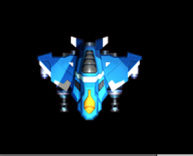
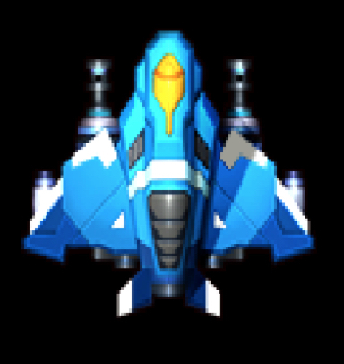
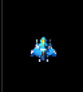
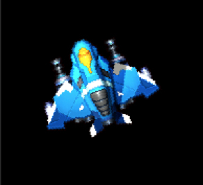
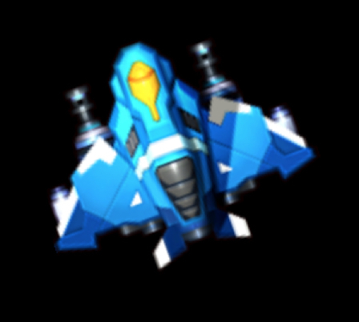
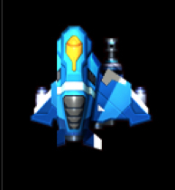
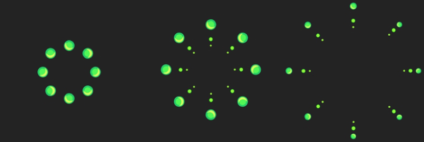

- 00 开篇词 跟我学，你也可以开发一款游戏！.md.html
- 复习课 带你梳理客户端开发的三个重点.md.html
- 第10讲 如何载入“飞机”和“敌人”？.md.html
- 第11讲 如何设置图像的前后遮挡？.md.html
- 第12讲 如何设置精灵的变形、放大和缩小？.md.html
- 第13讲 如何设置淡入淡出和碰撞检测？.md.html
- 第14讲 如何制作游戏资源包和保存机制？.md.html
- 第15讲 如何载入背景音乐和音效？.md.html
- 第16讲 如何在游戏中载入UI和菜单？.md.html
- 第17讲 如何用鼠标和键盘来操作游戏？.md.html
- 第18讲 如何判断客户端的网络连接？.md.html
- 第19讲 如何嵌入脚本语言？.md.html
- 第1讲 游戏开发需要了解哪些背景知识？.md.html
- 第20讲 脚本语言在游戏开发中有哪些应用？.md.html
- 第21讲 如何使用脚本语言编写周边工具？.md.html
- 第22讲 如何选择合适的开发语言？.md.html
- 第23讲 如何定制合适的开发协议？.md.html
- 第24讲 不可忽视的多线程及并发问题.md.html
- 第25讲 如何判断心跳包是否离线？.md.html
- 第26讲 如何用网关服务器进行负载均衡？.md.html
- 第27讲 如何制作游戏内容保存和缓存处理？.md.html
- 第28讲 热点剖析（一）：HTML5技术是如何取代Flash的？.md.html
- 第29讲 热点剖析（二）：如何选择一款HTML5引擎？.md.html
- 第2讲 2D游戏和3D游戏有什么区别？.md.html
- 第30讲 热点剖析（三）：试试看，你也可以编写一款HTML5小游戏！.md.html
- 第31讲 热点剖析（四）：安卓端和苹果端游戏开发有什么区别？.md.html
- 第32讲 热点剖析（五）：如何选择移动端的游戏引擎？.md.html
- 第33讲 热点剖析（六）：AR和人工智能在游戏领域有哪些应用？.md.html
- 第34讲 热点剖析（七）：谈谈微信小游戏的成功点.md.html
- 第35讲 热点剖析（八）：谈谈移动游戏的未来发展.md.html
- 第36讲 热点剖析（九）：谈谈独立开发者的未来发展.md.html
- 第3讲 游戏的发动机：游戏引擎.md.html
- 第4讲 底层绘图接口的妙用.md.html
- 第5讲 构建游戏场景的武器：地图编辑器.md.html
- 第6讲 从0开始整理开发流程.md.html
- 第7讲 如何建立一个Windows窗体？.md.html
- 第8讲 如何区分图形和图像？.md.html
- 第9讲 如何绘制游戏背景？.md.html
- 结束语 做游戏的过程就像是在雕琢一件艺术品.md.html
- 课后阅读 游戏开发工程师学习路径（上）.md.html
- 课后阅读 游戏开发工程师学习路径（下）.md.html
- 捐赠
第12讲 如何设置精灵的变形、放大和缩小？
上周四，我给你讲解了图片的遮挡问题。这一节我要和你讲精灵的变形、放大和缩小。如果之前没有做过游戏开发，你肯定会问，什么是精灵？
什么是精灵？
我先来解释一下什么是精灵。精灵当然不是我们传统意义上的什么树林里的精灵。精灵是一个游戏开发中的名词，英文叫Sprite。
它多用于游戏中的人物和可移动物品，也可以用于显示鼠标指针和输入的文字。如果屏幕上的可移动物体的尺寸比一个精灵图要大，可由若干个精灵图缩放或者拼接而成。
从宏观的概念讲，精灵就是一幅图片。比如我们之前中讲过的那些飞机图、背景图，这些都可以认为是精灵或者是从精灵中派生出来的。它就是一系列可以变化的图片。这些图片可以变形、放大、缩小，或者是一系列的动画帧等等。
从编程的角度讲，精灵是一种管理器。在一个精灵的管理器中，可能会有一系列的方法去操作精灵，比如添有加、删除操作，比如有图像的变形、放大、缩小操作，还有系列帧的显示操作等。
既然，精灵就是图片，那在“打飞机”中，飞机会随着画面的变化、操作的不同，而有变形、放大以及缩小的状态。我现在就来讲这些操作的实现，需要用到哪些函数，以及这背后都有什么技巧。
设置变形、放大和缩小需要用到哪些函数？
Pygame中的底层，使用的是SDL开发库，这个我们在之前的内容中已经讲过，因此，这些变形、放大缩小等操作，都有对应的SDL库。
我们要用到的还是之前的飞机图片，为了让你更明确的看清楚，我删除了背景，只呈现飞机的内容。
翻转函数flip
我们首先要用到的是函数flip。顾名思义，这个函数就是让你对图片进行翻转，你可以翻转成水平的或者垂直的。所以它拥有两个参数，一个是传入x，一个是传入y，并且都需要传入布尔值。如果传入x值为真，那就进行水平镜像翻转，如果y值为真，那就进行垂直镜像翻转，两个都为真，两方都进行翻转。这个函数会返回一个surface。
pln_t = pygame.transform.flip(pln, 1, 1)
screen.blit(pln_t, (40, 350))
我们看到的结果是这样：

原本飞机的头是朝上的，现在进行了水平和垂直的翻转。
缩放函数scale
我们再来看一下缩放的函数scale。scale的参数是这样：
scale(Surface, (width, height), DestSurface =None)
其中第一个参数是绘制对象，第二个参数是缩放大小，第三个参数一般不太使用，指的是目标对象。
pln_t = pygame.transform.scale(pln, (220,220))
screen.blit(pln_t, (20, 150))
我们在代码中，将pln这个对象放大到220×220（飞机原本大小为195×62），然后看一下效果。

你看，飞机变大了。我们再尝试修改一下代码。
pln_t = pygame.transform.scale(pln, (20,20))

飞机就变小了。所以，scale函数的作用是，只要你传入参数的width和height值大于原本精灵的长宽值，就变大，否则就变小。
类似，我们还有一个函数scale2x，你只需要填入绘制对象即可，函数会帮你进行两倍扩大，不需要你计算原本的长宽值并且乘以2。
旋转函数rotate
我们再来看一下rotate旋转函数。它提供一个参数angle，也就是你需要旋转的角度，正负值都可以。
我们来看一下代码。
pln_t = pygame.transform.rotate(pln, 20)
我们看到的效果就像这样。

这样飞机就朝左侧旋转了20度。 相似的，也有整合的函数rotozoom。它该函数提供了旋转和扩大的功能。
如果代码这么写：
pln_t = pygame.transform.rotozoom(pln, 20, 2)
我们能看到的效果就是这样：

剪切函数chop
接下来的是函数chop，这个函数提供了图像剪切的功能。我们需要传入一个绘制对象以及一个rect矩形，这样就可以将输入的矩形的内容剪切出来。
pln_t = pygame.transform.chop(pln, [20,150,25,155])
screen.blit(pln_t, (20, 150))
我们看一下代码的内容，我们在blit的时候，将pln_t放置在(20,150)的位置上，所以我们在chop的时候，将剪裁[20,150,25,155]这样一个矩形进行裁切。
然后我们来看一下效果。
- - 这么多函数，是不是容易记不住？我来给这一部分做个总结：
对于精灵的所有放大、缩小或者变换的函数，都在pygame.transform模块里。它提供了一系列2D精灵的变换操作，包括旋转角度、缩小放大、镜像、描边、切割等功能，让你很方便地能够在游戏中随心所欲地对处理2D精灵。
Pygame中的Sprite
我们再来看一下Pygame本身，Pygame本身就提供有Sprite模块，Sprite模块提供了Sprite类，事实上，Pygame的精灵类最方便的功能就是将某些序列帧的图片，做成动画，并且保存在Sprite的组（group）里面。在Pygame里面，Sprite是一个轻量级的模块，我们需要做的是要将这个模块继承下来，并且重载某些方法。
类explode
我们现在有一副图片，效果是打击到某个点，开始爆开图案。

这幅图片一共三帧，是一个标准的精灵动画。那么我们需要做的，就是先将这幅图片导入到精灵类当中。我们做一个类explode：
class explode(pygame.sprite.Sprite):
这个类继承自Sprite类，然后我们定义一个初始化函数，并且首先调用上层基类的初始化。
def __init__(self, target, frame, single_w, single_h, pos=(0,0)):
pygame.sprite.Sprite.__init__(self)
在这个类当中，我们看到了函数的定义内容，第一个参数self，我就不过多解释了；target是我们需要载入的目标图片；frame是我们需要告诉这个类，我们这个动画有几帧；single_w, single_h 代表了我们每一帧动画的长宽。在这里，我们的每一格动画是262×262。pos是我们告诉屏幕，将这个动画放置在屏幕的什么位置。
接下来，这是我编写的初始化代码：
def __init__(self, target, frame, single_w, single_h, pos=(0,0)):
pygame.sprite.Sprite.__init__(self)
self.image = pygame.image.load(target).convert_alpha()
self.main_image = self.image
self.frame = frame
self.rect = self.image.get_rect()
self.count = 0
self.single_w, self.single_h = single_w, single_h
self.rect.topleft = pos
大部分代码你应该都能理解，但是有几个点，我要特殊说明一下。
第一个是main_image。这个是保存主image图片。我们在后续的切换帧的时候，需要在main_image中切割后面几帧，并且呈现在屏幕上，这样就会在视觉效果中呈现动画效果。count是每一帧的当前计数。在这里我们一共拥有三帧，这三帧我们记录在self.frame里，是总的帧数。
重载函数update
接下来，我们来看一下update代码。
def update(self):
if self.count < self.frame-1:
self.count += 1
else:
self.count = 0
self.image = self.main_image.subsurface([self.count*self.single_w, 0, self.single_w,self.single_h])
Update是一个重载函数。事实上，在update函数里，需要判断帧数、当前循环的计数等等。但是，为了能让你能更直观容易地感受代码做了什么内容，所以我直接使用self.count来做帧数的计数。
进入函数后，我们使用self.count来和self.frame的总帧数进行对比。如果帧数不足以切换，那就加1，否则就置为0。判断结束后，我们就将image变成下一帧的内容。
其中，subsurface的意思是传入一个rect值，并且将这个值的surface对象复制给image对象，并且呈现出来。
这时候，我们需要将这些内容放入到group中。
exp = explode('explode.png', 3, 262,262, (100,100))
group = pygame.sprite.Group()
group.add(exp)
首先，exp就是我们定义的explode类的对象，我们分别传入的内容是图片、帧数、单个帧的宽度、单个帧的高度，并且将这个精灵显示在屏幕的位置。
随后，我们定义一个叫作group的对象，并且将exp对象填入group中。随后，我们在大循环内，写一串代码。
group.update()
group.draw(screen)
这个update，调用的就是exp.update函数。draw就是在screen中绘制我们填入group中的内容。由于动画在文章中无法显示，所以我就不将图片放入到文章中来了。
在精灵类中，我们除了动画的呈现，还有碰撞效果的制作。这属于更为复杂的层面，后续的内容，我将会用简单的方式来呈现碰撞的实现。
当然，Sprite类还有更为高阶的用法，除了碰撞，还有Layer（层）的概念。group的添加精灵，事实上是没有次序概念的，所以哪个精灵在前，哪个在后是不清楚的，到了这个时候，你可以使用OrderUpdates、LayerUpdates这些类，其中LayerUpdates拥有众多方法可以调用，这样就会有分层的概念。
小结
这一节，你需要记住这几个重点。
精灵的变形、缩放以及pygame中关于精灵类的一些简单的操作。
你可以直观地感受到，精灵类和group类配合起来使用是一件很方便的事情，也就是说，我们忽略了blit的这些方法，直接在group中，进行update和draw就可以一次性做完很多的工作。
如果我们单独编写精灵的序列帧动画函数，也不是不行，但是你可能需要编写相当多的代码来代替Sprite和group类的工作。
现在留一个小问题给你。
结合精灵的变形、放大和缩小，再结合Pygame精灵类的内容，要在update重载函数里绘制动画帧效果，并且不停地放大、缩小，该怎么实现呢？
欢迎留言说出你的看法。我在下一节的挑战中等你！
© 2019 - 2023 Liangliang Lee. Powered by gin and hexo-theme-book.